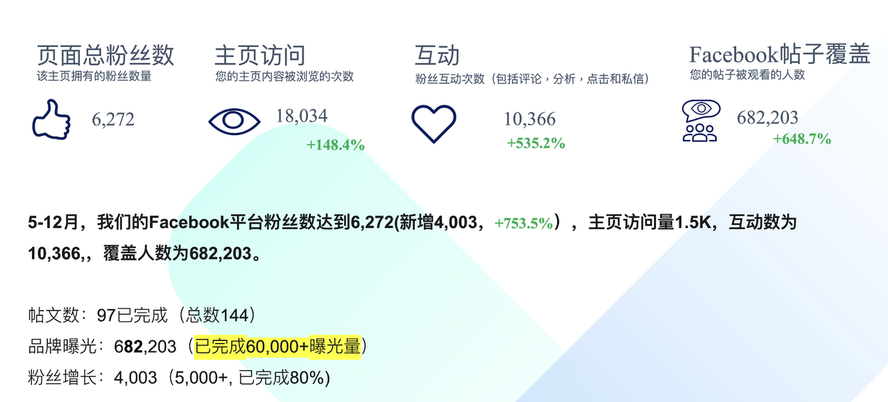

01 · Spelling
拼写与地区写法
识别容易混用的地区拼写、品牌名称和产品型号，防止同一品牌在不同素材中出现多个写法。
04 · AI enablement · Localization
从 Macau Beer 的 Facebook 双语贴文任务出发，把产品资料、品牌命名、粤语语感与发布要求写进结构化 Prompt，再将这些约束整理为文案校对规则。

Local language, local trust
把地区语言规范整理成可调用的工作工具，让本地化从个人经验变成团队能力。
同一篇 Facebook 贴文，要让澳门本地人读得自然，也让旅客读得明白。
最初的工作要求很具体：先研究同行表达，再为澳门啤酒撰写粤语繁体与英语双语文案；既要区分白啤和金啤，也要守住品牌命名、用字习惯和固定发布附文。
如果每次都靠人工记忆，审核会变慢，而且不同成员可能做出不同判断。于是我将问题拆成可识别、可训练、可复用的规则，再用 Monica 搭建一个团队可以直接调用的 Prompt 工具。
这是一个“小工具”，但背后的工作方式仍然是 GTM：识别市场触点中的摩擦，降低内容交付成本，并保护品牌在不同地区的表达一致性。
01 · Spelling
识别容易混用的地区拼写、品牌名称和产品型号，防止同一品牌在不同素材中出现多个写法。
02 · Vocabulary
建立词汇替换表，区分书面表达、社交表达、活动用语与产品说明中的不同语气。
03 · Tone
保留啤酒品牌应有的轻松感和生活方式气质，同时避免过度直译、过度正式或过度网络化。
04 · Context
判断词语放在节日、活动、产品教育或促销场景中是否自然，并提示可能需要人工确认的内容。
这份原稿首先服务于双语内容创作，并不是一份软件规格书。它把实际工作中反复出现的要求写了下来，也成为后续整理校对规则的依据。
澳门白啤：比利时风味精酿白啤，采用欧洲古典上层发酵工艺；酒体朦胧微白，泡沫细腻，蕴含酵母与浓郁果香。
11.8°P · 4.7% vol
澳门金啤：经典精酿艾尔，采用欧洲古典上层发酵工艺；增加焦香麦芽，融汇四种酒花，突出麦香、香气与易入口的酒体。
11°P · 4.6% vol
以下保留原稿中的措辞、用字与格式。原始任务要求和后续整理出的校对规则分开展示。
澳门啤酒要在他们的FB社媒平台上，发布几社媒贴文，以下的贴文是需要你搜索相关同行的文案后，针对澳门啤酒这个品牌，量身定制出的一篇双语文案：粤语（繁体中文）以及英语（地道英语） 1. 贴文的受众均为澳门本地人以及澳门旅客 2. 澳门啤酒的专业用法， 澳门白啤;Macau Beer White Ale;澳门金啤：Macau Beer Golden Ale;澳门啤酒：Macau Beer. 如果需要表达澳门这座城市，请使用'Macao'. 注意不要混淆 3. 澳门白啤的相关信息：比利时风味白啤酒（精酿）；采用欧洲古典上层发酵工艺；酒体朦胧微白，泡沫奶油般细腻；蕴含酵母，果香浓郁、优雅；11.8 ° P，4.7%vol/澳门金啤的相关信息：经典艾尔啤酒（精酿）;采用欧洲古典上层发酵工艺; 焦香麦芽增多，麦香更充足; 融汇四种酒花，香气更丰富; 酒精含量调整，酒液更易入口; 11°P，4.6%vol 4. 由于文案需要出双语版本，因此粤语与英文所添加的emojis不能重复，避免审美疲劳，尽量用活泼、明亮的语言写贴文 5. 字数不宜过长，注意添加以下的hashtags： #MacauBeer #澳門啤酒 #マカオビール #마카오맥주#DrinkLocal #樂享澳門之魅 6. 文案的顺序：粤语、英文、hashtags、限酒令 7. 限酒令信息： ⛔過量飲酒危害健康 CONSUMIR BEBIDAS ALCOÓLICAS EM EXCESSO PREJUDICA A SAÚDE EXCESSIVE DRINKING OF ALCOHOLIC BEVERAGES IS HARMFUL TO HEALTH ⛔禁止向未滿十八歲人士銷售或提供酒精飲料 A VENDA OU DISPONIBILIZAÇÃO DE BEBIDAS ALCOÓLICAS A MENORES DE 18 ANOS É PROIBIDA THE SALE OR SUPPLY OF ALCOHOLIC BEVERAGES TO ANYONE UNDER THE AGE OF 18 IS PROHIBITED 8. 请注意撰写文案时不要拘束于“无论.....还是....."这种表达方式，可以思维开阔一些 用不同的措辞 9. 请你一定要先搜索相关资料，再执行撰写文案的任务 10. 另外在输出粤语文案的时候，如果要用到“浓郁”這樣的詞語，請不要用”濃鬱”，而使用”濃郁”； 粵語裏的”試一下”，口語詞要用”下”，而不是”吓”。请不要使用“臺”，要用“台” 11. 注意输出的文案的标点符号要分清楚，中文文案用中文标题，英文文案用英文标题 12. 文案请去AI化 不能太死板，先分析理解信息，再搜索相关信息，最后输出文案 13. 一起举杯 感受魅力 这些词语请不要重复利用，请你设计出有创意性，令人眼前一亮的文案 14. 文案中 中文以及英文的符号要分清楚 不能弄混
01 / Research & Audience
原稿第 1、9、12 项要求先理解任务、研究同行，再撰写内容。对应到审核时，先确认贴文服务本地人还是旅客，以及城市、活动和产品信息是否准确。
02 / Brand Glossary
第 2 项明确区分城市 Macao 与品牌 Macau Beer；白啤和金啤分别保留完整英文产品名，避免把品牌拼写随城市写法一起替换。
03 / Product Facts
第 3 项给出了两款产品的工艺、风味、原麦汁浓度与酒精度。校对时分别核对，不把白啤的果香、11.8°P 与 4.7% vol 套到金啤上。
04 / Cantonese & Punctuation
第 10、11、14 项落实到明确的检查项：「濃郁」不用「濃鬱」，「試下」不用「試吓」，本项目采用「台」；中文与英文各用对应标点。
05 / Publishing Checklist
第 4–7 项规定粤语、英文、Hashtags、饮酒警示的顺序，并要求双语 Emoji 不重复。发布前逐项检查标签分隔、附文完整性与语言顺序。
06 / Editorial Judgment
第 8、12、13 项关注句式和创意，限制反复使用「一起举杯」「感受魅力」等表达。规则负责提示重复，创意是否贴合主题仍由人工判断。
规则应用示意 · 非历史输出截图
城市：Macau → Macao品牌：Macau Beer → Macau Beer用字：濃鬱 → 濃郁口语：試吓 → 試下
这里展示的是品牌项目的用语规范，而非所有粤语场景的唯一写法；涉及活动事实、发布附文和品牌决策，仍保留人工终审。
Documentation
说明什么时候使用、需要输入什么、哪些结果必须人工确认，以及如何将新错误加入错误库，降低团队第一次使用的门槛。
Feedback
每次人工修改都是新的业务样本。把“为什么这样改”记录下来，工具才不会停留在一次性演示。
AI 解决的不是“替代本地化判断”，而是把隐性经验显性化，让更多人能够按照同一套标准开始工作。
使用原则：规则可解释、结果可复核、品牌决策保留人工确认。可直接展示的交付包括原始 Prompt、品牌词汇规则和双语文案样例。账号增长与互动属于 Macau Beer 整体传播项目的结果。
Direct value
团队有了统一的词汇、语气与审核入口，跨地区沟通不再完全依赖某一个人的记忆。
Project context
Macau Beer 同时配合内容支柱、活动、微型 KOL、优惠二维码与折扣码等动作。9 个月增粉、互动与线下销售属于整体传播结果，不将它们单独归因于 AI 工具。
Macau Beer 整体传播项目记录了 100K+ MOP in offline sales；该数字属于完整项目结果，不是 AI 校对工具的单独结果。
Prompt → Bilingual Drafts
示范稿按澳门本地人及旅客的阅读场景设计，保留产品事实、粤语语感、地道英语和固定限酒令；这些是文案草稿，不代表已经发布或产生了新增数据。
澳门本地人
来澳旅客
Facebook
双语贴文
城市夜色 · 产品风味
餐饮搭配 · 旅程场景
Macao / Macau
产品名 · emoji · 限酒令
White Ale · City evening
行完街，飲返口澳門白啤
由大三巴行到夜色亮起，最適合留返一個慢慢飲嘅時刻。澳門白啤酒體朦朧微白，泡沫奶油般細膩；酵母帶出濃郁而優雅嘅果香，將澳門嘅夜，飲得更有層次。🌙🍊
澳門白啤｜比利時風味白啤酒（精釀）｜11.8°P｜4.7%vol
Slow down with White Ale in Macao.
From the Ruins of St. Paul’s to Macao’s city lights, leave room for a slower moment. Macau Beer White Ale brings a hazy body, creamy foam and an elegant fruit aroma from the yeast — a Belgian-style craft white ale made with traditional European top fermentation. ✨🫧
Macau Beer White Ale | 11.8°P | 4.7% vol
Golden Ale · Food pairing
海風未散，金啤先到
海風、燒味、啤酒花，澳門嘅夜晚可以有幾多種香氣？澳門金啤以焦香麥芽帶出更充足嘅麥香，再融匯四種酒花，香氣更豐富，酒液更易入口。配上海鮮、燒味或者葡式小食，啱啱好。🍤🌆
澳門金啤｜經典艾爾啤酒（精釀）｜11°P｜4.6%vol
A Golden Ale made for the Macao table.
Macao evenings have more than one kind of aroma. Macau Beer Golden Ale brings toasted malt, a fuller malt character and the lift of four different hops. Easy-drinking, with enough character for seafood, roast meats and Macanese bites. 🔥🌾
Macau Beer Golden Ale | 11°P | 4.6% vol
Macau Beer · Local travel
旅程最後一站，留返本地味道
行程去到最後一站，唔使急住離開。由街角小食、葡式風味，到夜色裡嘅城市故事，澳門啤酒將一口本地味道，留喺你嘅澳門旅程入面。📍🎒
澳門啤酒｜源自澳門
Leave room for a taste of Macao.
Your final stop in Macao does not have to be a rush. Make room for local bites, Portuguese flavours and the city stories that stay with you after dark. Macau Beer brings a taste of Macao to the final page of your trip. 🧭🍴
Macau Beer | Originated in Macao
示范稿分别从城市探索、餐饮搭配和旅程收尾切入。它们用于呈现原始 Brief 的应用方式，不作为历史发布记录或工具效果的量化证明。
英文城市统一使用 Macao；品牌和产品保留 Macau Beer、Macau Beer White Ale、Macau Beer Golden Ale；中文使用「濃郁」「試下」「台」，并让中英文 emoji 不重复。
Research references: Macau Beer official product information · Macao Tourism local craft beer context · Food pairing reference
⛔過量飲酒危害健康
CONSUMIR BEBIDAS ALCOÓLICAS EM EXCESSO PREJUDICA A SAÚDE
EXCESSIVE DRINKING OF ALCOHOLIC BEVERAGES IS HARMFUL TO HEALTH
⛔禁止向未滿十八歲人士銷售或提供酒精飲料
A VENDA OU DISPONIBILIZAÇÃO DE BEBIDAS ALCOÓLICAS A MENORES DE 18 ANOS É PROIBIDA
THE SALE OR SUPPLY OF ALCOHOLIC BEVERAGES TO ANYONE UNDER THE AGE OF 18 IS PROHIBITED
Localization
把地区差异拆成词汇、语气、场景和品牌信任问题，而不是只检查字面错误。
AI application
使用结构化 Prompt、词库和错误库，让工具能够被复核、被更新、被团队复用。
Enablement
通过一页说明、输入规范和人工审核机制，让 AI 真正进入日常内容生产。